Attention is all you need
相关信息
论文地址：Attention is all you need
代码（Pytorch版）:https://github.com/jadore801120/attention-is-all-you-need-pytorch/tree/master?tab=readme-ov-file
资源：【3Blue1Brown】Visualizing Attention, a Transformer's Heart
本页内容是对Transformers的文章总结/代码阅读(侧重代码学习)
必读论文，懂的都懂，不懂的快去看。
文章摘要
在序列建模和转换问题中，由于RNN、LSTM和门控循环神经存在各种问题，如RNN难以建立长距离依赖关系，LSTM无法并行化学习等，故论文提出了一种基于attention机制并完全避免循环和卷积的简单的网络架构Transformer。
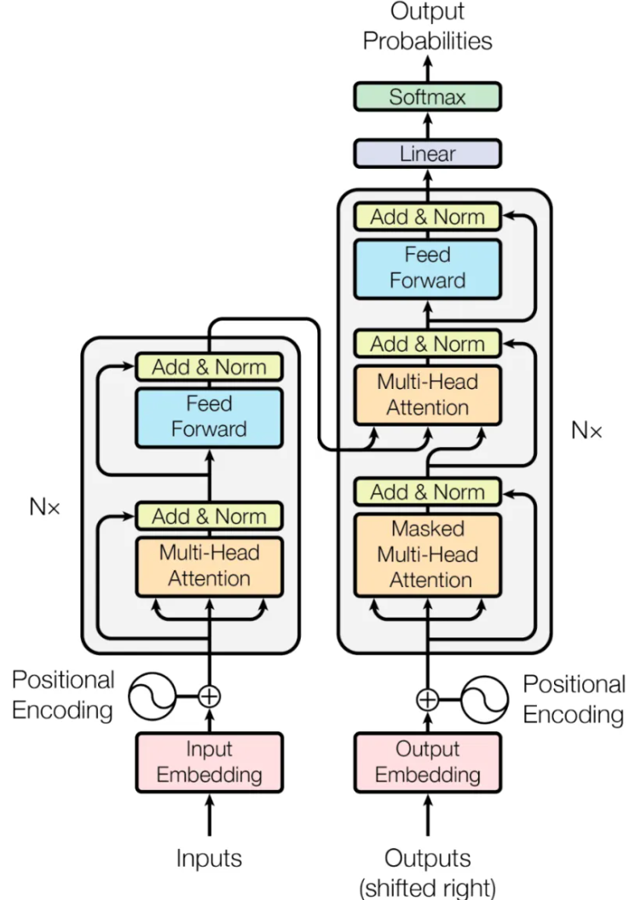
Module.py
-
缩放点积注意力
ScaledDotProductAttention\[ Attention(Q, K, V) = Softmax(\frac{QK^T}{\sqrt{d_k}})V \]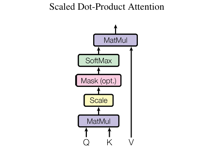
假设\(Q,K\)的维度为\((N,d_k)\)，\(V\)的维度为\((N,d_v)\)，其中\(Q,K,V\)代表Query， Key， Value， \(d_k\)代表Key的维度，除以\(\sqrt{d_k}\)是为了防止点积过大，导致梯度消失。其中\(Softmax(QK^T)\)得到的维度为\((N,N)\)。
\(Q\)代表query，是当前要处理的词对应的向量，\(K\)代表key，通过计算\(Q\)与\(K\)的关系可以得到当前需要对其他词的关注度。
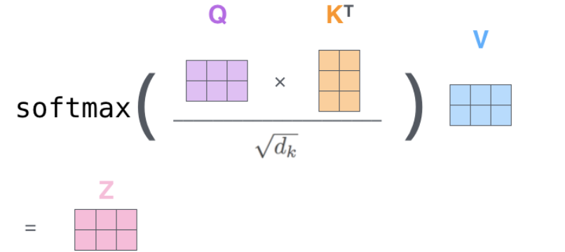
点积注意力即是通过\(Q\)与\(K\)的点积相乘计算了相似度，其
Softmax分数决定了在该位置的注意力权重，即对其他词的注意力程度，后与\(V\)相乘得到结果。在普通的
Attention中，\(K,V\)对应编码器输出，\(Q\)对应解码器当前的输入。Self-Attention中，\(Q,K,V\)都对应于当前的输入\(X\)。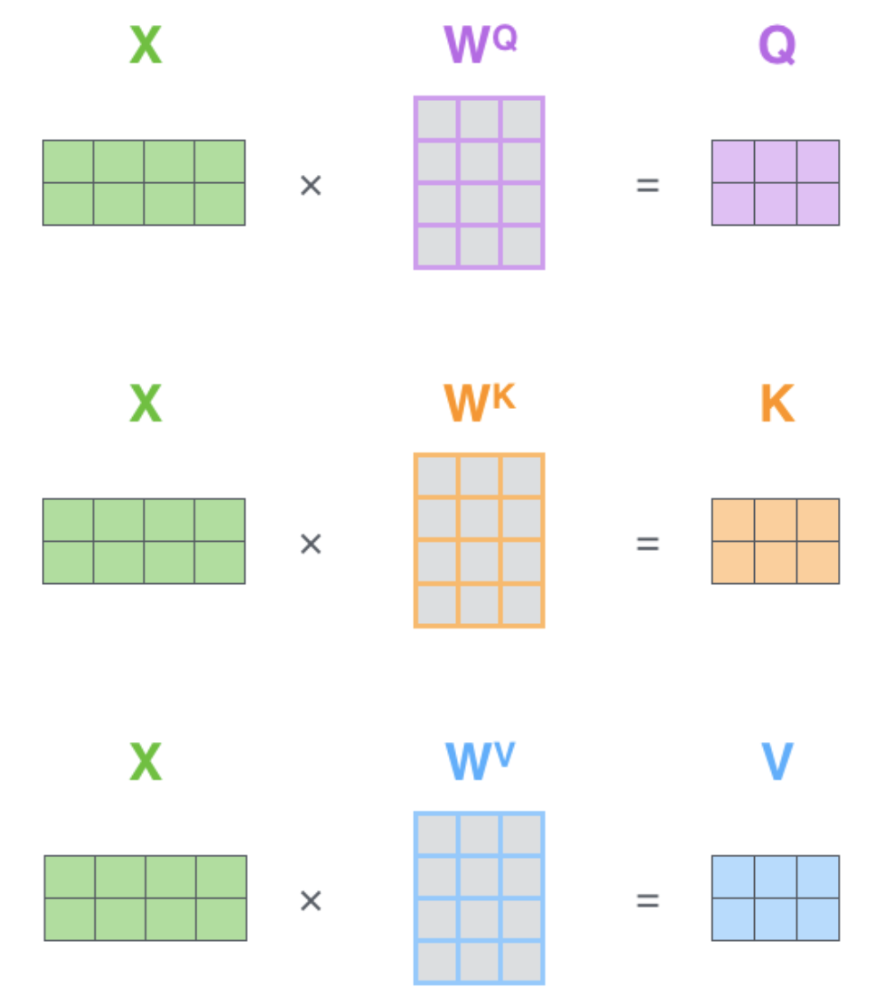
Code
SubLayers.py
-
多头注意力机制
MultiHeadAttentionMulti-Head Attention是一种将Scaled Dot-Product Attention扩展到多头的方法，它将Query, Key, Value 分别经过多个线性变换（称为“头”）后再输入到Scaled Dot-Product Attention中计算，最后将多个Attention输出按照通道维度拼接起来。\[ MultiHeadAttention(Q,K,V) = Concat(head_1, head_2,...,head_n)W^O \]其中\(head_i\)表示第\(i\)个
Attention头，\(W^O\)表示最终输出的线性变换矩阵，\(n\)表示头的数量。
MultiHead为Attention层提供了多个“表示子空间”，对于Transformer使用8头。这些集合中每一个都是随机初始化的，在训练之后，每组用于将输入embedding投影到不同的表示子空间中。Code
-
Position-wise前馈网络\[ FFN(x) = max(0, xW_1 + b_1)W_2 + b_2 \]即使用两个线性变换，并在其中插入一次ReLU激活函数作为前馈网络
Code
Models.py
-
位置编码
PositionalEncoding对一种位置编码方法的要求：
-
需要体现同一单词在不同位置的区别。
-
需要体现一定的先后次序，并且在一定范围内的编码差异不应该依赖于文本的长度，具有一定的不变性。
-
需要有值域的范围限制。
\[ PE_{(pos, 2i)} = sin(\frac{pos} {10000^{2i/d_{\text{model}}}}) \]\[ PE_{(pos, 2i+1)} = cos(\frac{pos} {10000^{2i/d_{\text{model}}}}) \]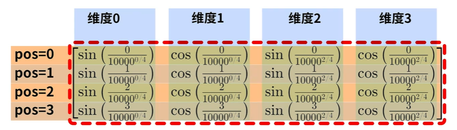

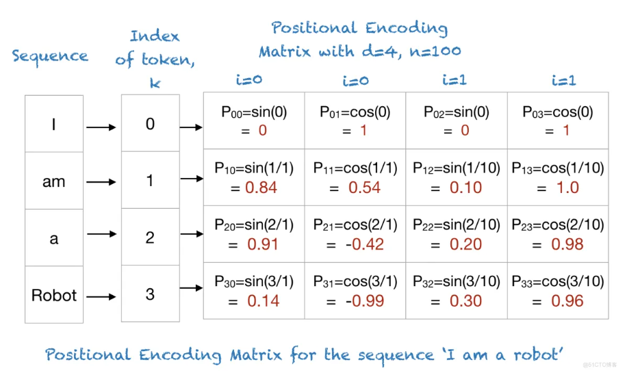
即偶数位用正弦函数，奇数位用余弦函数来处理编码，其中\(pos\)代表一句话中token的位置，每个token的位置编码是一个向量，\(i\)表示这个向量中每个元素的index，\(d_{model}\)代表位置编码向量的维度。
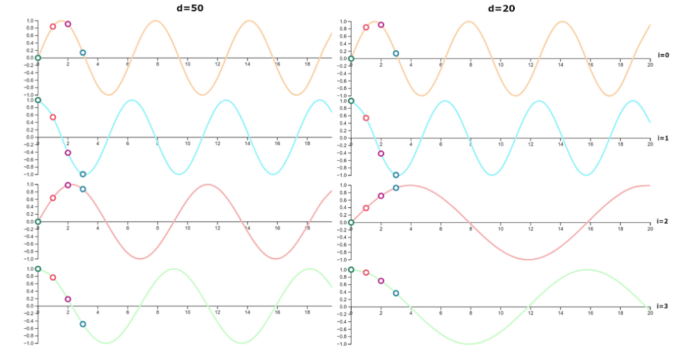
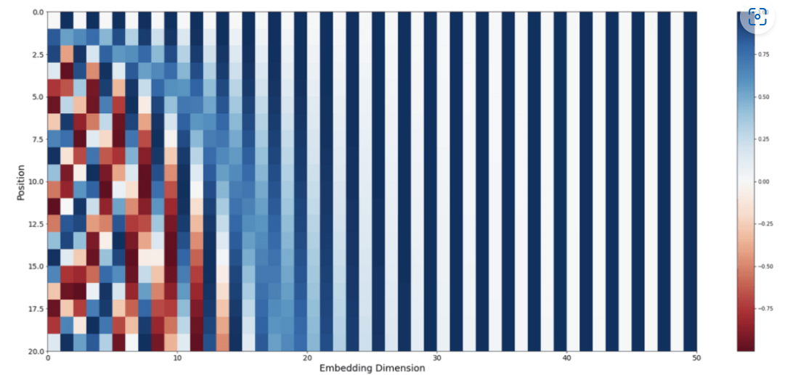
某个pos位置的位置编码可表示为：
\[ PE_{pos}=\begin{bmatrix}sin(\omega_1\cdot pos) \\ cos(\omega_1\cdot pos) \\ sin(\omega_2\cdot pos) \\ cos(\omega_2\cdot pos) \\ \vdots \\ sin(\omega_{d/2}\cdot pos) \\ cos(\omega_{d/2}\cdot pos) \end{bmatrix} \]其中编码因子\(\omega_i = \frac{1}{10000^{\frac{2i}{d_{model}}}}\)
假设某一个
token的位置为pos，另一个token表示为pos+k，那就表明这个位置距上一个token为k，根据Transformer中给出的位置编码公式，则:\[ \begin{aligned} PE_{(pos+k,2i)}&=sin(\omega _i\cdot (pos+k)) \\ &=sin(\omega _i\cdot pos)cos(\omega _i\cdot k)+cos(\omega _i\cdot pos)sin(\omega _i\cdot k) \end{aligned} \]\[ \begin{aligned} PE_{(pos+k,2i+1)}&=cos(\omega _i\cdot (pos+k)) \\ &=cos(\omega _i\cdot pos)cos(\omega _i\cdot k)-sin(\omega _i\cdot pos)sin(\omega _i\cdot k) \end{aligned} \]使用\(w_i\)代替\(\frac{1}{10000^{\frac{2i}{d_{model}}}}\)；
\[ PE_{(pos+k,2i)}=cos(\omega _i\cdot k)PE_{(pos,2i)}+sin(\omega _i\cdot k)PE_{(pos,2i+1)} \]\[ PE_{(pos+k,2i+1)}=cos(\omega _i\cdot k)PE_{(pos,2i+1)}-sin(\omega _i\cdot k)PE_{(pos,2i)} \]因为\(k\)为常数，则设\(u=cos(\omega _i\cdot k), v=sin(\omega _i\cdot k)\)：
$$ \begin{bmatrix} PE_{(pos+k,2i)} \ PE_{(pos+k,2i+1)}) \end{bmatrix}
=
\[\begin{bmatrix} u & v\\ -v & u \end{bmatrix}\]\times
\[\begin{bmatrix} PE_{(pos,2i)}\\ PE_{(pos,2i+1)} \end{bmatrix}\]$$
由此可知，位置
pos的编码与位置pos+k的位置编码是线性关系。\[ \begin{aligned} PE_{pos}\cdot PE_{pos+k}&=\sum_{i=0}^{\frac{d}{2}-1}sin(\omega _i\cdot pos)\cdot sin(\omega _i(pos+k)) \\ &= \sum_{i=0}^{\frac{d}{2}-1}cos(\omega _i(pos-(pos+k))) \\ &= \sum_{i=0}^{\frac{d}{2}-1}cos(\omega _i\cdot k) \\ \end{aligned} \]对于\(PE_{pos}\)与\(PE_{pos+k}\)的点积，可得一个余弦的和值，并且这个和值随着\(k\)的增大而减小，即两个
token的距离越大，也就是K越大，两个位置的PE相乘结果越小（位置编码可以表示相对位置关系）但显然这样的位置关系并不是显式的，需要大量的训练数据来让模型充分学习到位置信息，特别是在处理长序列和复杂依赖关系时。
为什么位置编码不直接拼接到编码矩阵中呢？
直接拼接会扩大参数空间，占用内存增加，而且不易拟合，而且其实没有证据表明拼接就比加来的好
Code
-
-
编码器
EncoderCode
-
解码器
DecoderCode
-
Transformer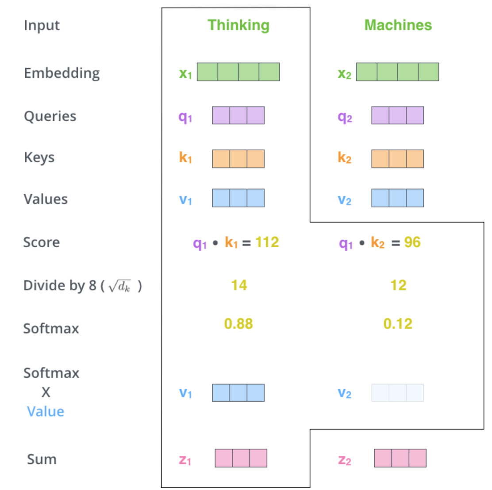
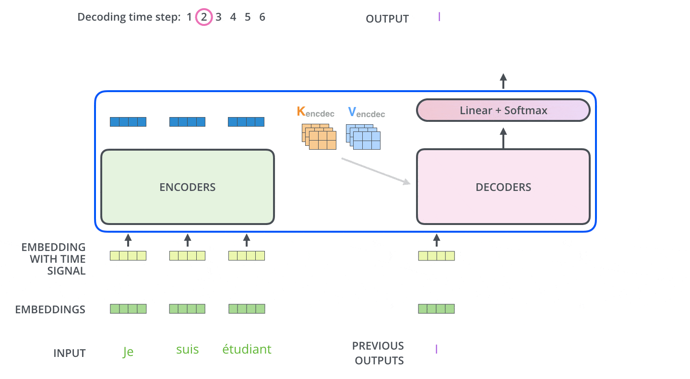
Code
Layers.py
-
Encoder与Decoder组成部分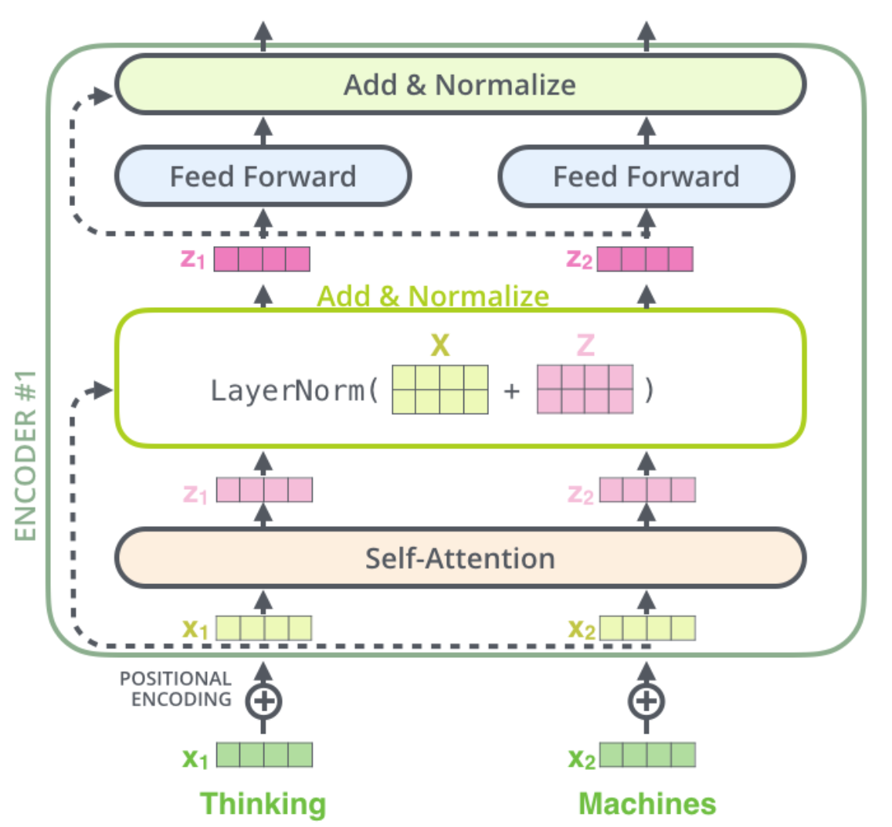
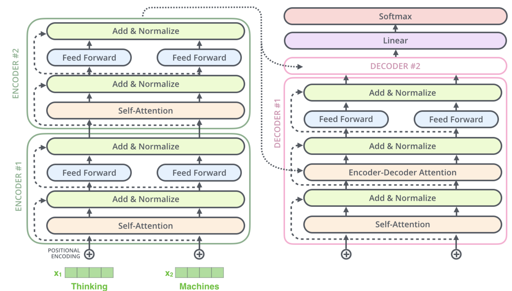
Code
Optim.py
-
优化函数
根据以下公式在训练过程中改变学习率：
\[ lrate = d_{model}^{-0.5} \cdot min(step\_num^{-0.5}, step\_num \cdot warmup\_steps^{-1.5}) \]Code